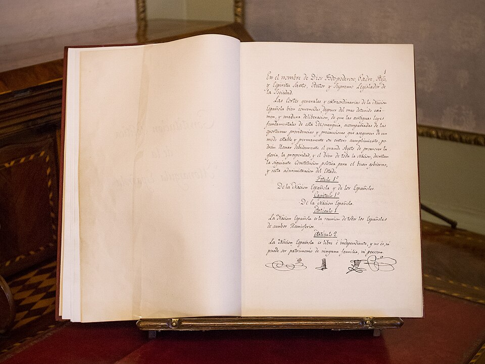

Cádiz promulga la Constitución entre salvas, campanas y bombas francesas
En el día de San José, las Cortes refugiadas en Cádiz han promulgado la primera Constitución de la monarquía española. La soberanía reside en la nación, dicen sus artículos, mientras las bombas del sitiador caen sobre la ciudad que los ha escrito.

Cádiz ha vivido el día más solemne de su historia entre dos músicas: las campanas y salvas de la fiesta, y el ruido sordo de las bombas que los franceses arrojan desde sus baterías de tierra firme. Esta mañana, en la casa de la Aduana, la Regencia ha jurado la Constitución, y los diputados marcharon luego en cortejo por calles llenas de gente, desafiando un recio temporal de lluvia y viento, hasta la iglesia del Carmen, donde se cantó el Te Deum. Por la tarde se ha publicado la Constitución con pregón y ceremonia en las plazas, y la ciudad entera, sitiada y todo, ha parecido de fiesta grande.
El texto que hoy se jura ha costado año y medio de debates a las Cortes generales y extraordinarias, reunidas primero en la Real Isla de León y luego en el oratorio de San Felipe Neri de esta ciudad. En sus bancos se sientan clérigos, catedráticos, marinos, comerciantes y letrados de ambos mundos, pues hay diputados de América y de Asia junto a los de la península. Entre sus nombres repiten todos el de don Diego Muñoz-Torrero, que abrió las sesiones sosteniendo la soberanía de la nación, y el del asturiano don Agustín de Argüelles, a quien llaman el Divino por su elocuencia.
La Constitución declara que la soberanía reside esencialmente en la nación, y que la nación española es la reunión de todos los españoles de ambos hemisferios. Separa las potestades: las Cortes harán las leyes, el rey las ejecutará y los tribunales juzgarán. Consagra la libertad política de la imprenta, ya decretada hace dos años, y mantiene la religión católica como única de la monarquía. El rey sigue siendo don Fernando VII, hoy cautivo en Francia, en cuyo nombre se ha hecho todo; la Constitución le aguarda con la corona puesta, pero con las leyes delante.
El pueblo de Cádiz, que lleva dos años oyendo silbar las bombas del sitiador sin perder el humor, ha hecho suya la jornada. Por haber nacido en el día de San José, no falta quien llame ya a la Constitución, con gracejo gaditano, la Pepa. Se cantan coplas contra las bombas francesas, que dicen que caen y no matan; los balcones lucen colgaduras, y en los cafés de la calle Ancha se leen en voz alta los artículos como quien lee cartas de un pariente que vuelve. Hasta el temporal que quiso deslucir el cortejo fue vencido por el gentío, que no se movió de las aceras.
Quede registrado lo esencial: una nación invadida, con su rey cautivo y su gobierno refugiado en el último rincón libre de la península, no se ha limitado a resistir; se ha dado leyes. Podrá discutirse cada artículo, y se discutirá, pero el hecho no tiene semejante en nuestra historia: la monarquía española tiene desde hoy una Constitución escrita, jurada entre salvas mientras el enemigo bombardea a sus redactores. Cuando el rey deseado vuelva de su cautiverio, hallará algo nuevo aguardándole junto a su pueblo: un libro de leyes que dice de quién es la soberanía. Dios quiera que ambos se entiendan.